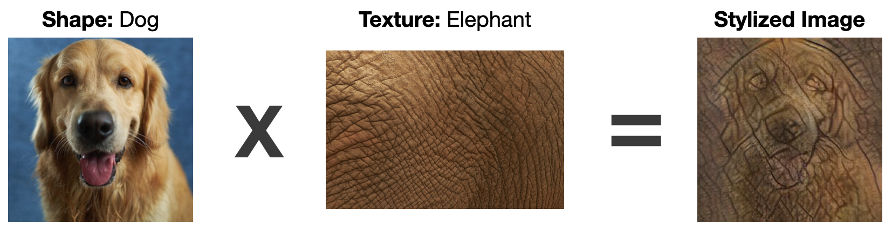

<h2 id="detailsSubTitles"> Style Transfers </h2>

<p id="detailsText"> Details about style transfers here. </p>




<h2 id="detailsSubTitles"> Saliency Maps </h2>

<p id="detailsText"> Details about saliency maps here </p>


<h2 id="detailsSubTitles"> Insight into Understanding Model Behavior </h2>

<p id="detailsText"> Details here </p>

<h3 id="howToDetails"> How to use In<span style="font-style: italic;">sight</span>ful Saliency Maps </h3>